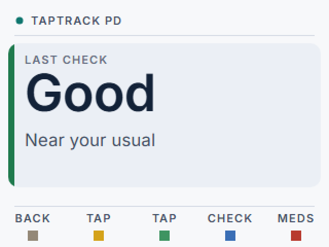
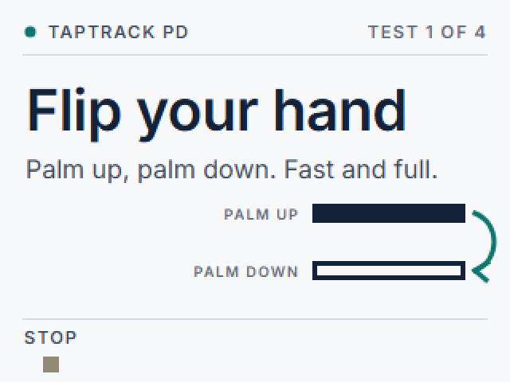
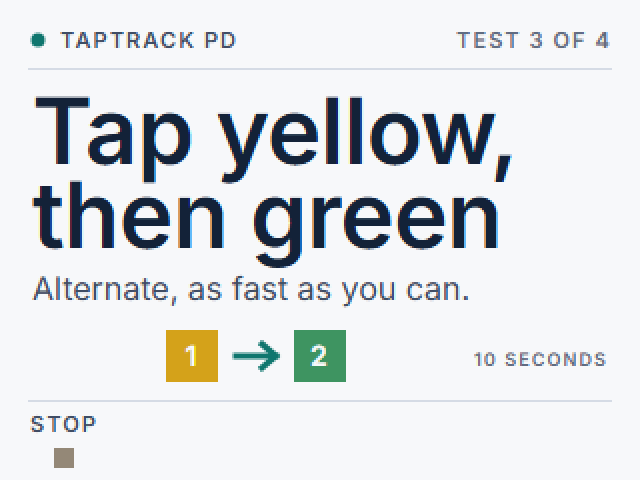
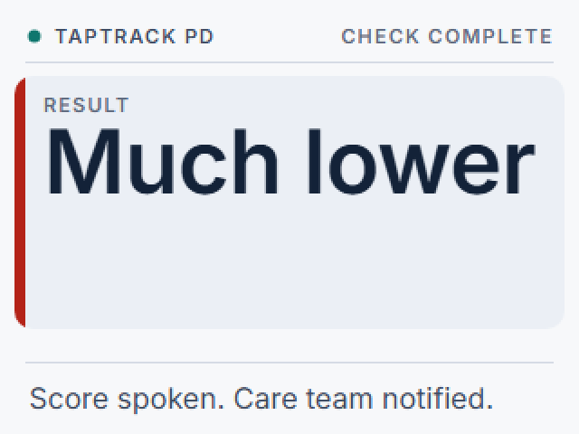
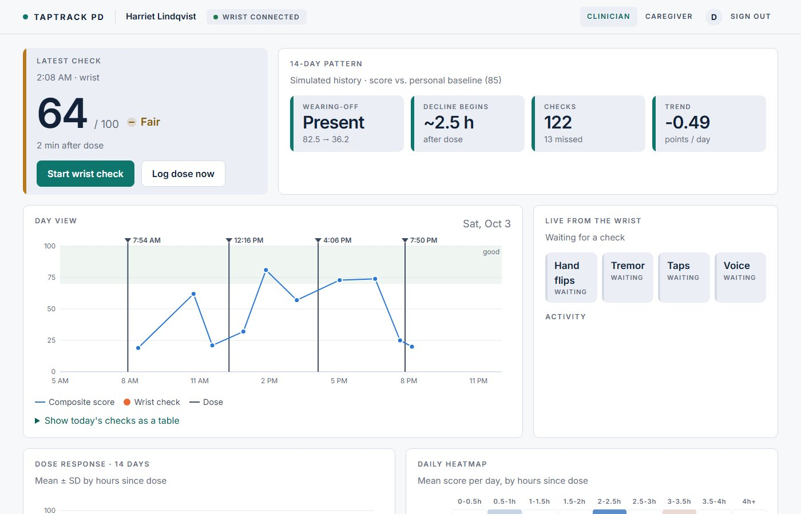

For Parkinson's care
Parkinson's changes hour by hour.
Neurologists see it a few times a year. TapTrack PD shows them the hours they're missing.
A one-minute check on the wrist, several times a day, tagged with the time since the last levodopa dose.




Typical levodopa dosing. Each dose wears off before the next one.
A year with the neurologist, adjusting timing from memory.
Per check on the wrist: flips, tremor, taps, voice.
How it works
Wear it all day, dock at night, like a Holter monitor.
Log the dose
Press red when you take your medicine. Every later check knows how long it has been.
Do the check
Press blue. The wrist speaks each step: hand flips, holding still, alternating taps, a steady "ahhh".
Get a result
Your score against your own baseline is spoken aloud. The screen shows Good, Lower than usual, or Much lower.
See the pattern
Two weeks of checks become a dose-response curve the neurologist can read in seconds.
- Hand flipping: flips per second, amplitude, and how much they shrink over 10 seconds.
- Tremor: strength while holding still, and its dominant frequency in the 3-12 Hz band.
- Alternating taps: tap rate, rhythm regularity and slowing, on the device's own buttons.
- Voice: loudness and steadiness of a sustained "ahhh" from the built-in microphone.
- Passive tremor: sampled between checks whenever the wrist is still.
For clinicians
Wearing-off, visible at a glance.
Every result is tagged with time since dose. In this example, scores peak 1 to 2.5 hours after a dose and fall about 45 points by 3 to 4 hours: the wearing-off window, measured instead of remembered. One click writes a visit report for the neurologist and a plain-language summary for the patient. Patterns only, never dose advice.

Dose-response curve
Mean score by hours since the last dose, with spread.
Heatmap
Score by hours since dose for every day, so trends and outliers stand out.
From the wrist
Each test lands on the dashboard the moment it finishes.
Care agent
It acts on the pattern, not just shows it.
A care agent watches every check. When a result comes back much lower than usual, it texts the caregiver. When a check is missed, it nudges the patient. When a wearing-off pattern appears, it sends the visit report to the clinic and asks for a follow-up. Caregivers can text back any time to ask how the day is going.